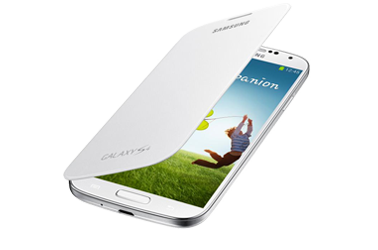

Suppose we told you that a press image of the Samsung Galaxy S IV has been available for you to look at for nearly a month? Seems crazy, right? Back on December 27th 2012, a student from Hong Kong with absolutely no connection to Samsung, posted the image of what is alleged to be the Samsung Galaxy S IV. The picture shows a phone with some subtle changes from the Samsung Galaxy S III including a less rounded top and bottom, a thinner bezel, and a larger screen and home button. Even the information listed with the picture on Picasa has what appears to be the correct information, as it names the phone the "Galaxy S IV GT-I9500 Product Image".
Earlier on Tuesday we told you that J.K. Shin said that the Samsung Galaxy S IV will not appear at MWC, and speculation centers on a U.S. hosted Samsung Unpacked event on March 22nd as the date when the sequel to the hot selling Samsung Galaxy S III will be introduced with a launch to commence in the middle of the following month.